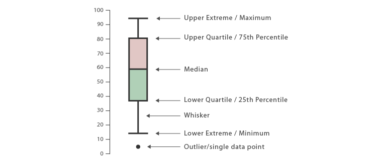

At the end of this lesson you should be able to:
In lesson 1, we discussed the role of sample of data in estimating truths about a larger population and what sampling strategies we use when trialing agricultural products. In lesson 2, we created our final datasets, checked for missing data, and we discussed how summary statistics are our way of numerically understanding the shape of data and how our sample may or may not be a good estimate for the population.
Outliers are values that distort and confuse our understanding of the population distribution. The role of the analyst is to identify and address instances of measurement error in order to present the most accurate picture of population.
Before starting this lesson, you should be familiar with basic data manipulation techniques, summary statistics in R, and should know how to set up your data for analysis in R. You should also have completed Lesson 2.
What do you think an outlier is? What criteria do you use to determine outliers?
An outlier is an observation that is far from other values in a random sample of data. It does not conform to the patterns present in the data. There are several methods available to us to identify what may and may not be an outlier. However, the pursuit of statistical outlier detection must be balanced with the question: Is this value a real value?
Remember that the goal for any data collection exercise is to collect the sample data that most accurately reflects the trends of the population. We should therefore think of outlier detection as a subset of the general pursuit of true values about the target population. Thus, our task is not simply how to find outliers that stand out for being very different but how do we also find data points that are wrong but blend in? Our options to reliably collect only true values can be categorized into logistical and statistical methods.
Do you believe that the examples below are outliers or true values using our knowledge of the 1AF context?
What are some ideas on how we can check for outliers during data collection?
Controlling and identifying suspicious starts with data collection. Unfortunately, if data is being collected on paper, our only recourse for checking variables at a large scale is manually reviewing the paper surveys. Bummer. If we’re lucky, we can have data entry teams entering the critical subsets of the surveys on a rolling basis so that at the bare minimum, key survey values are available to check. The following list enumerates logistical options available to One Acre Fund to collect true values.
Restricting survey options: We can easily use the tablets to restrict the possible answers for categorical and discrete variables to set response lists. For continuous variables, we can restrict the response range to only the values that we reasonably expect to be real values. This avoids keystroke errors creating erroneous values in the data.
Real-time data checks: Electronic data collection also allows us to check data values in real time and, in the event of a suspicious value, direct field teams to return to the farmer and clarify the true value. Survey managers should develop scripts or do files to check the data for unusual values following each tablet sync.
Audits/back checks: Finally, survey teams can conduct audits with a random subset of participating farmers. The role of the auditor is to independently re-ask a subset of the survey in order to calculate a survey-level error rate for enumerators. Audits help uncover the erroneous values that blend into the distribution. For example, the respondent does not understand the One Acre Fund definition of household size and thus under reports the number of household members. The auditor presents the definition more clearly leading to a different, and more accurate, answer.
Have you used these methods before? If so, are there methods that you find work better than others? If not, what has prevented you from using these methods?
If the discrepancies between the initial survey results and the audit results are sufficiently high, it may be necessary to conduct the entire survey again or investigate other surveys conducted by that enumerator
The rest of the training will focus on statistical processes available to us to pinpoint likely erroneous values after data collection. These are the methods we would use during the real-time data check phase of data collection:
Note of Caution: Although statistical methods can show us unusual values in the distribution, they cannot answer the question about whether a value is right or not. Only by working with enumerators and field leaders can we confirm true values so we should be checking our data as much as possible while there is still time to verify values in the field.
The methods for identifying potential outliers in the data are: (1) Intuition, (2) Visualizations including distributions, box plots and scatter plots, (3) Standard deviations above and below the mean, and (4) Interquartile range. We will address each of them in turn and then apply each of them to example data.
How might we use intuition (contextual knowledge) to detect outliers?
Your knowledge of the agricultural context, trial design and data collection methodology are your strongest allies in the quest to identify correct and incorrect values. Just like you critically examine trial results based on your expectation, analysts must critical examine the data points before reporting results. As you use the methods described below, use your agricultural knowledge and expectation as a guide to extreme values to examine more deeply. We have an advantage as agricultural analysts of having biological benchmarks for what may and may not be true. Socio-economic questions, by comparison, have a much wider range of possible true answers for a given context. Conversely, if one of the methods below flags a value as a statistical outlier but in context it looks like a reasonable value, trust that intuition and collect more evidence before making your decision.
Next, we will cover some common data visualization techniques we can use to look at the shape of our data.
What do you think looking at the shape of the data can tell us?
As we discussed in the first lesson, visualizing distributions is a helpful way to understand what is happening with our data. Humans are much better at detecting patterns in images than in numbers (analysts are no exception!).
There is a pre-loaded and cleaned dataset called sr17_data. Use the data to calculate the distribution of yields per acre (Hint: you might need to examine the variable names of the data)!
Try plotting the distribution of kg per acre using ggplot.
ggplot(sr17_data, aes(x = kgYieldPerAcre)) + geom_density() What do you notice from the above graph? Does this help us tell how each variety performed?
Next, we will want to add in the name of each maize variety trialed to the graphs. ggplot() has some built-in features that let us plot groups of data, instead of the data as a whole.
Add in a
ggplot()aesthetic to help group the data by trial name.
# hint: what types of aesthetics are available to geom_density? Reference the ggplot cheat sheet.# hint: try the 'fill' aesthetic, and try setting the alpha argument of geom_density to .3ggplot(sr17_data, aes(x = kgYieldPerAcre, fill = name)) + geom_density(alpha = .3) What do you notice from the above graph?
In these graphs we are looking for any distribution that is not normally shaped. By normally shaped, I mean shaped like a bell curve. The data doesn’t need to be shaped like a bell to be okay but if it’s not, it’s probably an indication it’s worth a closer look.
A few things immediately jump out: First, most of the varieties have a long-left tail around 0, which could potentially signal germination problems that the variety was having. Second, one variety (P2859W) had two distinct peaks. This could potentially signal a difference in performance at different stations. None of the graphs indicate unusually large values.
Distributions are a quick and easy way to see the spread of values. It’s important to note that, however, that we don’t actually know exactly which values are the outliers. All we know is which groups to check out and roughly what value we’re looking for in those groups.
What type of plot do you suggest using for categorically distributed data?
In the case of categorical data, we would not want to use a distribution plot. Instead, we would want to use a tool like a histogram (geom_histogram) to plot the frequency of the data
Box plots are a pre-packaged method for displaying components of a distribution. The image below illustrates how to interpret a box plot:

Box plots are helpful because they demarcate both the span of the distribution and the concentration of the distribution (median and 25th and 75th quartiles). The maximum and minimum in a box plot are excluding outliers. Box plot outliers are defined as 1.5 times the upper (75%) or lower quartile (25%).
Let’s see how to make box plots in R and what they tell us about potential outliers. Use the same dataset as above to generate a boxplot with the y-axis as your dependent variable (yields), and x-axis as your independent variable (seed variety).
### note - I also include the fill here to give each group it's own color
ggplot(sr17_data, aes(y = kgYieldPerAcre, x = name, fill = name)) + geom_boxplot() What do you notice from the above graph?
An advantage of box plots is that rather than just seeing if there’s an outlier in a group we get to look at variations specifically within groups.
How does this approach compare/contrast from using distributions? Do you notice any potential outliers?
Something to note is that in order to use a variable as a grouping variable it must be a factor/categorical variable. Strings are automatically coerced to categorical variables. If it is a numerical variable, however, you will need to coerce it manually to a numeric variable for the grouping to work.
Try to create a boxplot using block_number as the x variable and kgYieldPerAcre as the y variable from the sr17_data dataset.
ggplot(sr17_data, aes(x = as.factor(block_number), y = kgYieldPerAcre)) + geom_boxplot() We’ve already seen that many of the groups had germination problems- the boxplots support this conclusion. However, It appears that the DKC 80-33 had a long/spread out value that was hard to see in the distribution plots. The boxplot shows us that the median, and top quartile, is above most of the other varieties.
There are also a few values that are potentially outliers, but fall within a reasonable range for yields.
We now not only know which we should check for outliers but we know specifically which variations within which groups and what the likely outlier values are. Due to this, when possible boxplots are a more insightful view of the data.
Scatter plots allow us to model the relationship between two variables. The advantage of scatter plots is that in modeling the relationship of two variables we are more likely to be able to identify a data point that would otherwise blend into the distribution. If distributions and box plots help us visually find outliers, we can say that scatter plots help us find inliers - values that are erroneous but otherwise difficult to identify in the distribution. To illustrate this point, look at the following graphs using the pre-loaded iris dataset:
iris[1, "Petal.Width"] <- 2.2
ggplot(iris, aes(x=Petal.Length)) + geom_density() + theme_oaf() +
labs(x = "Petal Length", y = "Density", title="Distribution of Petal Length")
iris$mark <- as.factor(ifelse(row.names(iris)==1, 1, 0))Above shows the normal graph using a density plot - as you can see it is very difficult to identify the outlier. Instead, modify the code above to use a scatter plot:
iris[1, "Petal.Width"] <- 2.2
iris$mark <- as.factor(ifelse(row.names(iris)==1, 1, 0))
ggplot(iris, aes(x=Petal.Length, y=Petal.Width, color=mark)) +
geom_point() +
labs(title = "Scatter plots catch strange values by modeling
relationships in the data",
x="Petal Length", y = "Petal Width",
color="Strange Value") +
theme_oaf()What do you notice from the above graph?
Try creating your own scatter plot using the sr17_data with kgYieldPerAcre as the y variable and trial_number as the x variable.
ggplot(sr17_data, aes(x = trial_number, y = kgYieldPerAcre)) + geom_point()When we only looked at the Petal.Length variable, we did not see any values that stood out as unusual. However, when we visualized the relationship between Petal.length and Petal.width, we suddenly see value that does not conform with the rest of the data.
Scatter plots are useful for finding inliers, values that on their own look correct but are inconsistent with relational trends in the data. Analysts should keep their mind open to potential relationships in the data that can help give insight into potential erroneous values.
How might you use scatter plots during p1/p2 analysis?
What is a standard deviation?
The standard deviation tells us how spread apart the data is from the mean. Which plot do you think has a large and small standard deviation?
How do we use R code to calculate the standard deviation? Use the sr17_data set to calculate the overall standard deviation for yields per acre.
sd(sr17_data$kgYieldPerAcre)The output above tells us the overall SD for yields per KG. A more robust way of looking at the standard deviation is looking at the standard deviation by trial (and by AEZ if applicable).
Use your knowledge of the dplyr group_by and summarize functions to calculate the standard deviation by trial.
# calculate the overall sd of yield kg/acre here by trialsr17_data %>%
group_by(name) %>%
summarize(
"Average SD" = sd(kgYieldPerAcre)
)How do you think we can use standard deviations to catch outliers?
The method of looking for values greater than or less than 2 or 3 standard deviations from the mean is probably the approach with which you are probably most familiar. As we saw in the first lesson, the mean gives the central tendency of the data while the standard deviation reports the spread of the data. In normally distributed data, there is a rule of thumb that tells us that 68% of observations fall within 1 standard deviation of the mean, 97% of observations fall within 2 standard deviations of the mean and 99.7% of observations are with 3 standard deviations of the mean.
Since a small percentage of observations fall outside 2 standard deviations from the mean and an even smaller percentage are greater than or less than 3 standard deviations from the mean, we can utilize that relationship to make an educated guess at what observations might be outliers. However, just because a variable is 2 or 3 standard deviations away from the mean does not make it an outlier because as we’ve seen, there are still a small percentage of observations that normally are that far from the mean.
How do you think we calculate this in R?
farmr check_sdIn our One Acre Fund farmr package, we have a function that will automatically flag outliers based on the standard deviation called check_sd.
This function takes the following arguments:
dataset The full dataset you want to analyze.column - the name of the column you want to use to calculate outliers.... - The names of the grouping columns, for example the name of the trial and the name of the seed variety.flag - TRUE if you want to return a boolean (1 - outlier, 0 - not) flag or FALSE if you want to return the actual number of SDs above the mean. The default is FALSE.sdNum - The number of standard deviations above the mean you want to flag. The default is 3.The function returns a column that you can add to your dataset. If you want to append the column to your dataset, simply use the function to create a new column.
check_sd ExerciseExercise: Return the boolean flag for high/low yield per acre values in the
sr17_datadataset using thecheck_sdfunction in thefarmrpackage.
# note - you will want to calculate the outliers for each trial (block_type_number)
# as well as each test variable within the trial (e.g. trial_number)
sr17_data$sdOutliers <- check_sd(sr17_data, kgYieldPerAcre, block_type_number, trial_number, flag = TRUE)Standard deviations from the mean utilizes statistical relationships to identify possible outliers. You can use cut-offs like 2 and 3 standard deviations from the mean to mark these possible outliers for further investigation. You can also create a normalized variable to present the distributions in terms of standard deviations from the mean.
The advantage to looking at normalized values is that it shows how far values are from the mean. It acts as a check on our visual perception of what is and is not extreme relative to the mean.
The interquartile range (IQR) is the differences between the third quartile (Q3) and the first quartile (Q1). Since we know that the third quartile tells us the value below which 75% of our values fall and that the first quartile is the value below which 25% of our values fall, the interquartile range is the range within which we find 50% of the distribution’s values.
The advantage of using the interquartile range is that it is less sensitive to the presence of outliers. As we saw with using standard deviations for outlier detection, the presence of a large or small outlier directly influences the size of the standard deviation making it somewhat of a circular tool for outlier detection.
The interquartile range, however, since it relies on quartiles, is not as easily swayed by unusually large or small values. Let’s look at how this looks in R using the farmr package:
How do you think using IQR and SD compare?
farmr check_iqrIn our One Acre Fund farmr package, we have a function that will automatically flag outliers based on the standard deviation called check_iqr.
This function takes the following arguments:
dataset The full dataset you want to analyze.column - the name of the column you want to use to calculate outliers.... - The names of the grouping columns, for example the name of the trial and the name of the seed variety.The function returns a column that you can add to your dataset. If you want to append the column to your dataset, simply use the function to create a new column.
check_iqr ExerciseExercise: Return the boolean flag for high/low yield per acre values in the
sr17_datadataset using thecheck_iqrfunction in thefarmrpackage.
# note - you will want to calculate the outliers for each trial (block_type_number)
# as well as each test variable within the trial (e.g. trial_number)
sr17_data$iqrOutliers <- check_iqr(sr17_data, kgYieldPerAcre, block_type_number, trial_number)The first thing we notice that the using the interquartile range returns far more values than the standard deviation. This is likely a product of the IQR range being a more stable value, and smaller, than the standard deviation. Does this mean that we should remove all of these values marked as outliers by the IQR code? No.
As with our other detection methods, we want to use detection to draw our attention to values that might warrant a second look. In this case, we see that the values captured by the standard deviation check were also captured by the IQR method. These values are definitely worth talking with field officers about to gain more context for what appear to be unusual values.
We have flagged a few different methodologies you can use to identify possibly erroneous data, but we have not discussed how to use these results to interpret your analysis.
How do you think we can use this information when we interpret our results?
We will cover this in the next section after you have used fully analyzed the results.
Great, but what should I do? I’ve shown you a handful of approaches to detecting outliers but what would I recommend you do given this data? I would suggest the following:
ggplot(sr17_data, aes(y = kgYieldPerAcre, x = name, fill = name)) + geom_boxplot() I would flag the extreme values identified. These values consistently came up as extreme with different methodologies, especially if there is a biological basis for removing the value. I say ‘likely’ because I would want to first confer with the data collection team about whether we have any additional context for these values that might explain leaving them as they are.
If I remove the values, I would create new variables with names like yieldSD or yieldIQR so the original data is preserved and it’s easy to identify the modified sample for analysis.
We looked at intuition, visualization, standard deviations from the mean, and interquartile as options for detecting outliers in agricultural datasets. Our statistical tool box is pretty full but which tool should we use and when?
To start, if you do remove values using one of these methods, you must report both the findings from the full sample and the sample with outliers removed and include a justification for why the outlier estimate is more accurate. You need to do this to keep full transparency into your methods so there’s no uncertainty during interpretation.
Intuition - Your best asset. You will know better than the computer what looks right and what is wrong. It can’t tell you everything and it will likely be biased in non-blind trials. Always spot check data against your intuition and expectation. Let your intuition guide you but let statistics challenge you.
Visualization - Like intuition, visualizing data best utilizes your senses to detect unusual values. & Needs to be checked against statistical expectations. Visualization is a start but not a final step for outlier detection. I strongly recommend visualizing data when possible. Graphs are easier to understand and easier to communicate to clients.
St. Dev. - Uses trends in the data to identify unusual values & Requires normal data and is sensitive to large and small values affecting the st.dev. I recommend using this method in conjunction with visualization and another method. You should corroborate these findings with other methods given how it can be swayed by extreme values.
IQR - More stable to extreme values than the st. dev. method. IQR may return more values which will require more back checking. I recommend this method both for monitoring data as it’s being collected and post-data collection.
What are your key takeaways from this lesson?
Look at your data: As with the first lesson, a key takeaway for outliers management is to be looking at your data. Visualize and summarize your data! Lessons 1 and 2 contain numerous code chunks to simplify this process.
Find the ground truth: Ultimately outlier detection is about finding the truth in the field. Use outlier detection methods to help you focus conversations with field teams and enumerators about true and erroneous values. If possible, direct enumerators and data entry teams to review suspicious values.
Be biased toward no bias: Analysts should be familiar with the data collection methods that created the data with which they’re working. If those processes are working correctly, all data points should be true data points even if they’re on the extremes of the distribution. I recommend working to strengthen those processes so analysts, who are farthest from the data collection process, are not the ones deciding what is a true value and what is not a true value. If you’re not confident, leave the value in the sample.
Report all changes to the sample: If your intuition, visualizations and other methods lead to conclude that a value is an outlier, take action! Best practice following removing potential outliers is to report results from both the full sample and any outlier-adjusted sample. Reporting both sets of results makes fully transparent the consequences of removing outliers.
Now that we have our datasets complete and free of errors, we can begin the actual analysis!
Use the farmr package SD and IQR functions to check for outliers for each of your datasets. Plot the outliers. What do you notice from these?
If you want to write your own SD check function, go ahead and try! I am happy to go over it during the next lesson.
One Acre Fund has numerous other documents dealing with outlier management. We have included the functions most relevant to agriculture trial analysis, but if you are still curious about how to handle outliers in other situations please refer these resources:
An additional method we have not discussed is called winsorizing. Winsorizing is when extreme values are, instead of being removed, adjusted to the nearest trusted value in the distribution. This method has several advantages:
Preservation of directionality: Imagine our distribution as a scale. If we remove extreme values from the distribution, we shift the weight of the distribution back toward other, less extreme, values in the distribution and hopefully back toward the central tendency in the data. However, we sacrifice the contribution of the individual data point toward shaping the distribution. By winsoring the data point to the value of the nearest trusted data point, we keep the weight of that data point on the same side of the distribution but simply move it within the range with which we’re comfortable.
Preservation of sample size: Removing key data points like yield shrinks the data set. Agricultural trials are typically already operating with limited data points making this a potentially costly action in terms of statistical power to detect an effect. Winsoring maintains the sample size while reducing how remote extreme values are.